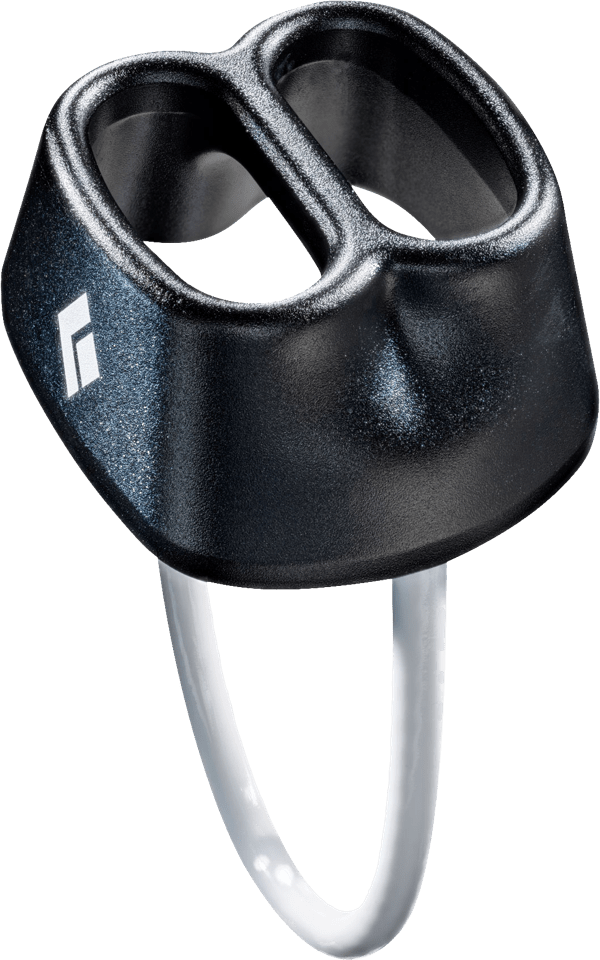
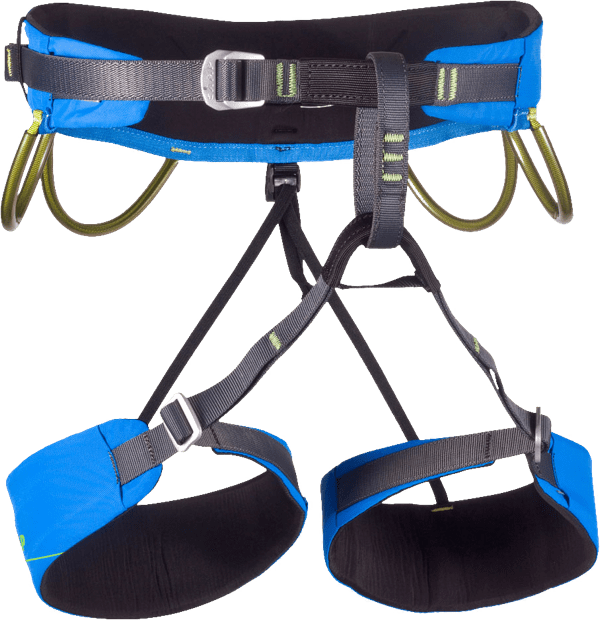
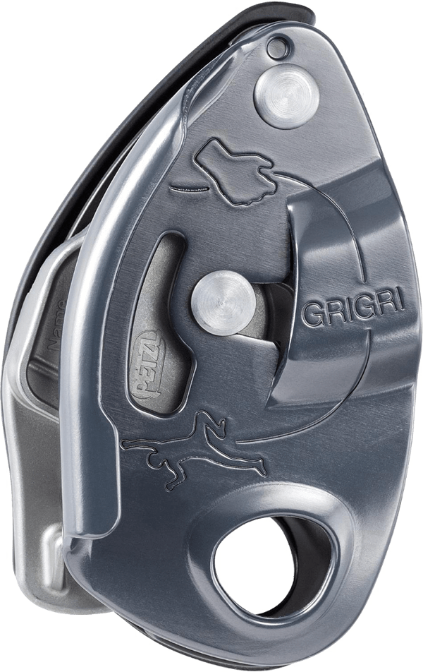

Climbing is one of those sports that can seem way out of reach for newcomers. But it doesn't have to be.
communication is key
For most, gym climbing is seen as the end of the road—but in reality it’s just the beginning. While indoor facilities provide a safe and convenient environment in which to practice, climbing can be most enjoyed in the great outdoors—where variables such as weather, rock, and scenery are constantly changing.
When issuing commands, always start by calling your partner’s name. Oftentimes at busy crags, many parties will be climbing and issuing similar commands to your own. By calling your partner’s name at the beginning, you can clarify the direction for your communication. Always acknowledge received commands with a “thank you!” followed by your partner’s name.
indoor climbing
Gyms attempt to replicate outdoor climbing experiences through the use of artificial walls, handholds, and footholds. At each gym, different "routes" up the wall are set at varying levels of difficulty. Routes are typically color-coded by holds, and their difficulty is marked at the start with a plastic card designating its name and grade. The higher the number, the more difficult the route.
Indoor climbing is typically divided into three disciplines. Bouldering, top roping, and lead climbing. Each of these vary in technique, but the objectives are all the same: get to the top.
types of climbs
-
Bouldering
-
Top Roping
-
Lead Climbing
-
TRAD (Traditional)
For most, gym climbing is seen as the end of the road — but in reality it’s just the beginning.
the great outdoors
For most, gym climbing is seen as the end of the road—but in reality it’s just the beginning. While indoor facilities provide a safe and convenient environment in which to practice, climbing can be most enjoyed in the great outdoors—where variables such as weather, rock, and scenery are constantly changing.
gear you’re gonna need
-

ATC
-
Climbing Shoes
-
Chalk Bag
-

Harness
-

Grigri